UNMANNED FOOD RETAIL PROPOSALレストラン品質を届ける、完全無人の販売空間。
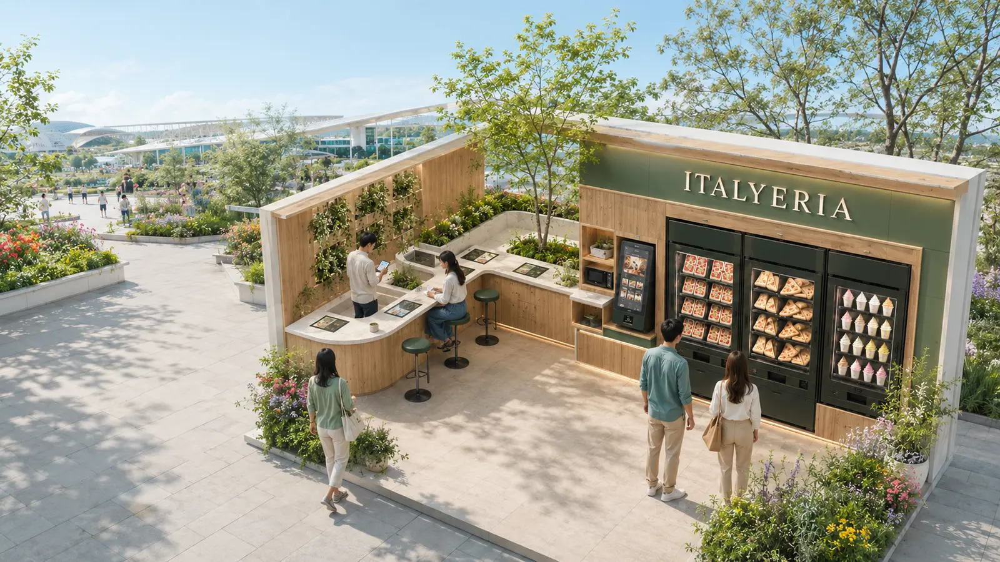
万博運営の経験、国内各地の販売実績、料理人の開発力。そのすべてをITALYERIAの無人空間へ。Expo experience, nationwide sales and chef-led development—brought together in one unmanned ITALYERIA space.
無人だから簡素にするのではなく、商品・映像・香り・温める時間までを、ブランドとの出会いとして設計します。Unmanned does not mean stripped down. Products, media and heating time are designed as one complete encounter with the brand.
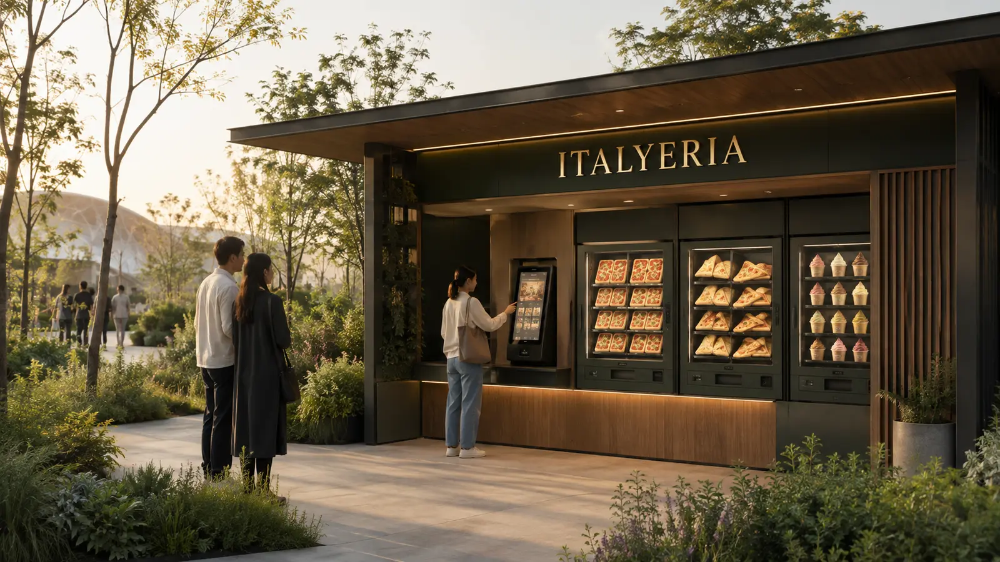
朝食だけではなく、昼食・間食・夕方の軽い食事まで。万博の回遊行動に合わせた商品提案です。From breakfast and lunch to snacks and light evening meals—a lineup designed around how visitors move through the Expo.
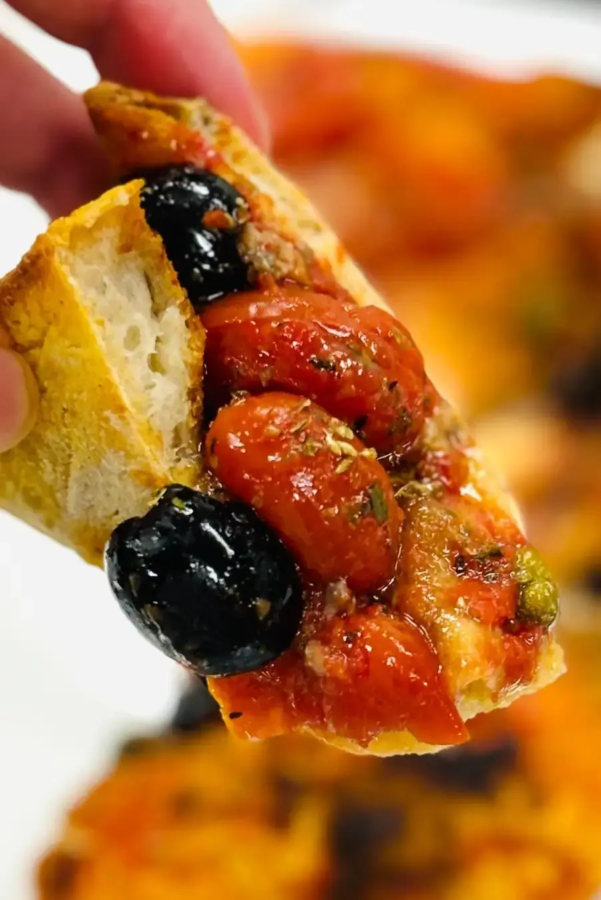
自販機で商品を選び、キャッシュレスで購入。折りピザは隣の電子レンジで温め、デリボックスは自然解凍でそのまま。どちらも席を待たずに会場へ持ち出せます。Choose at the vending machine and pay cashlessly. Heat the folded pizza in the nearby microwave; enjoy the Italian deli box after natural thawing. Take both straight back into the Expo—no table required.
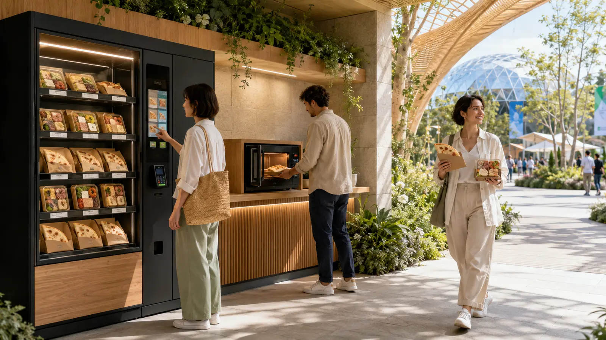
サルバトーレ・クオモは、九州にある自身の研究所で長い時間をかけ、入念に商品開発を続けています。At his own research laboratory in Kyushu, Salvatore Cuomo has spent years carefully developing food that can carry a chef’s quality beyond the restaurant.
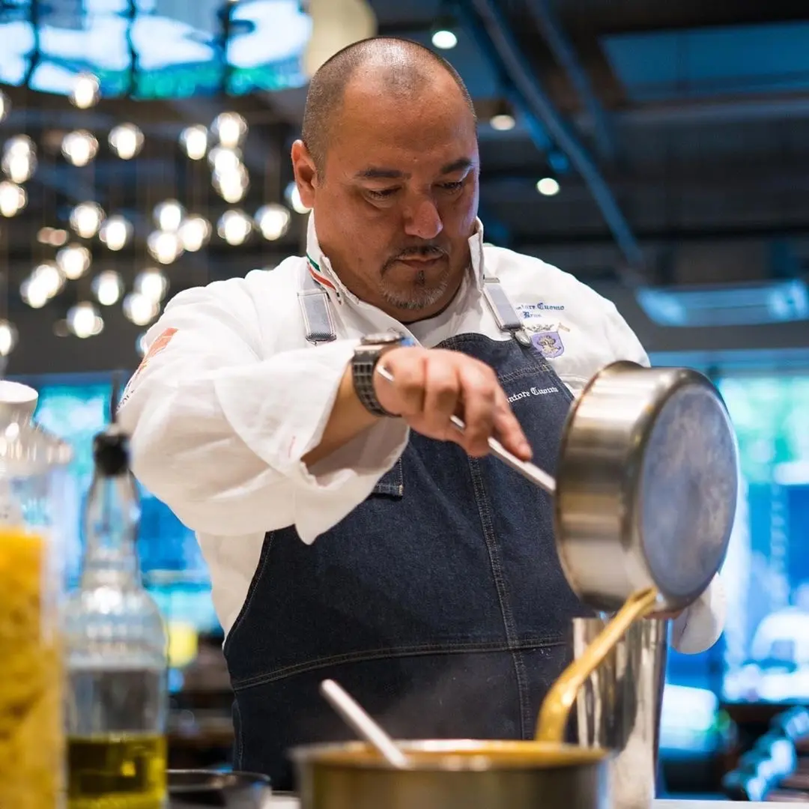
CASA CUOMO CAFEでは、冷凍販売とセルフ加熱を組み合わせ、席や注文調理に依存せず、世界各国の来場者へ食事を届け続けました。At CASA CUOMO CAFE, frozen products and self-heating kept food moving to visitors from around the world—without depending on seating or made-to-order preparation.
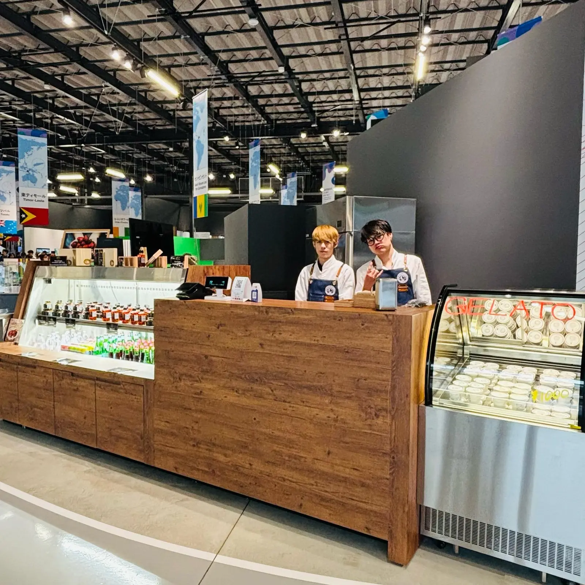
THE BLOSSOM HIBIYAの24時間ラウンジをはじめ、ホテル・流通・観光拠点へ供給。冷凍ピザは香港への輸出実績もあります。From a 24-hour guest lounge at THE BLOSSOM HIBIYA to hotels, retail and tourism sites across Japan—plus frozen-pizza exports to Hong Kong.
THE BLOSSOM HIBIYA / Casa Cuomo Pizzeria
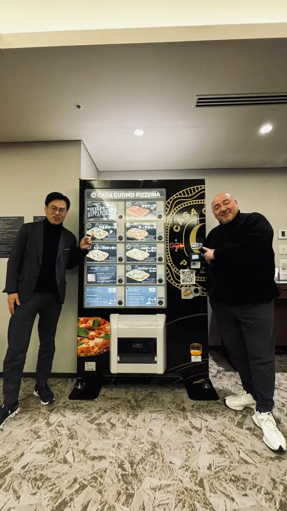
購入と加熱を分け、複数のお客様が同時に動けるように設計。ブースそのものが次の行動を直感的に案内します。Purchase and heating are separated so several guests can move at once. The booth itself makes every next step intuitive.
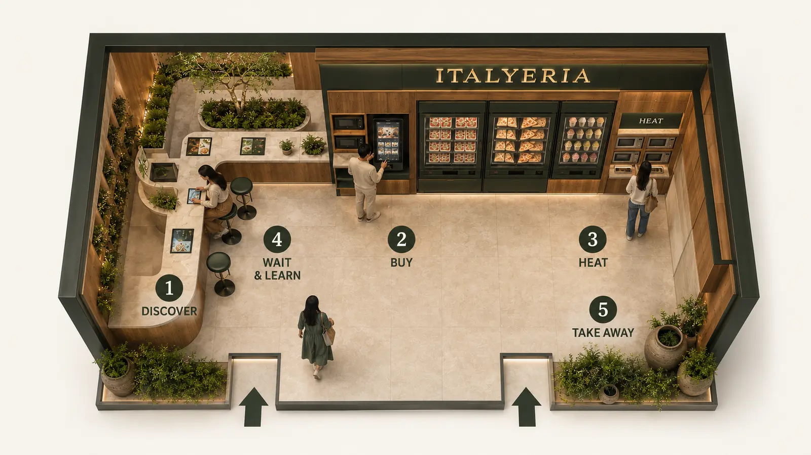
実際のブース内で、来場者が加熱を待つ間に、生産者・サルバトーレ・協賛ブランドの物語に触れます。Inside the booth, guests discover producers, Salvatore and partner brands while their food heats.
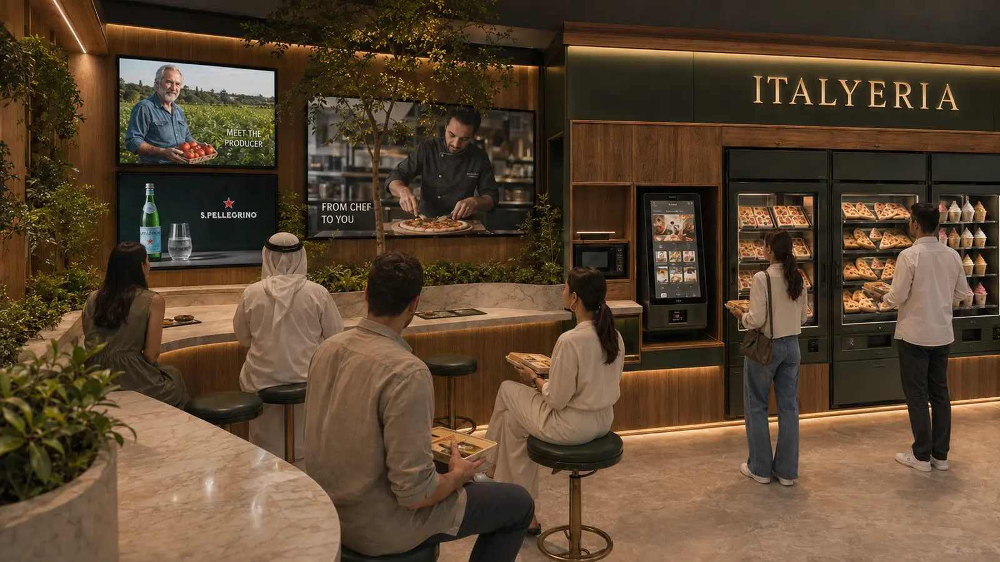
冷凍在庫は、急なピークにはすぐ供給でき、来場者が少ない日は次の販売機会へつなげられます。販売データと組み合わせ、つくった商品を捨てません。Frozen inventory answers sudden peaks and carries products safely into the next sales opportunity. Combined with sales data, it helps us waste nothing.
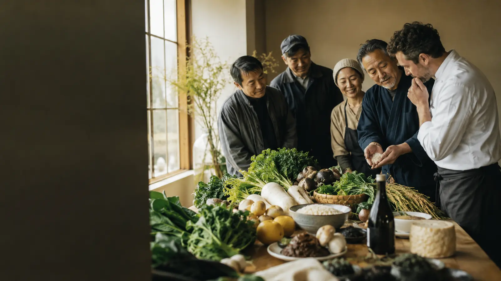
人をなくすのではなく、人にしかできない仕事へ集中させます。Automation lets people focus on the work that truly requires human skill.
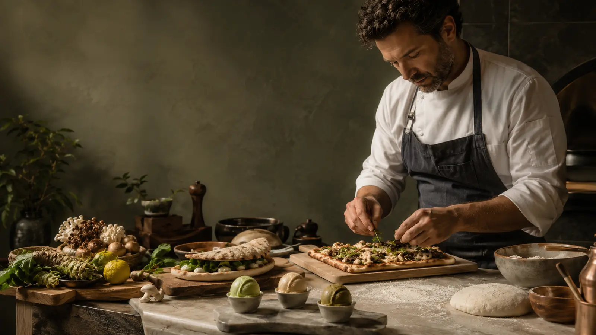
商品を売るだけではなく、選ぶ・温める・知る・楽しむまでを一つの体験にします。More than vending: one seamless experience from discovery and purchase to heating and enjoyment.